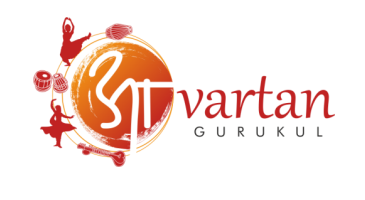

As a Guru

Ramdas is a founder member and a Guru at Avartan Gurukul - a unique institution for studying Hindustani music in Pune, India. His rich educational background helps him understand the nuances of the pedagogical aspects of Hindustani music. Ramdas is ably carrying forward his Guru Pandit Suresh Talwalkar ji's legacy by imparting knowledge to music students through the Guru-Shishya tradition, without any remuneration, for which his Guru feels proud of him. Students from all over India and abroad have been learning from him, many of whom have made their mark in the field of Classical Music as performers. Saleel Tambe (UK), Harshad Kanetkar (USA), Nikhil Harishchandrakar (Australia), Ganesh Tanawade, Einav Baram (Israel), Pablo Llambias (Chile) and many more of his students are spread across the globe. Ramdas strongly believes that art and art education must be ingrained with Sanskaar, and not merely be transfer of information. He insists on nourishing and nurturing students not only as capable musicians, but also as cultured and responsible citizens. This only underlines his dedication and devotion towards the cause of Indian Classical Music and his genuine urge to make a difference to the society at large. He is also teaching Tabla to a few differently-abled students for several years and is an inspiration for his students and other gurus alike.
